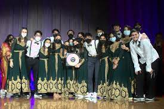

Jhankaar is the premier South-Asian fusion a cappella team on campus at UC Davis.
We aim to fuse traditional Indian and Western genres through unique musical
arrangements and energetic performances, combining classical Indian music,
Bollywood hits, and contemporary Western music. We compete in national
collegiate a cappella competitions and have most recently placed 3rd at Jeena 2022
Currently, we are competing in the 2023 ASA Circuit, with the goal of reaching All
American Awaaz in Atlanta, GA. We also are excited to release two new singles in the
coming months. Stay tuned!